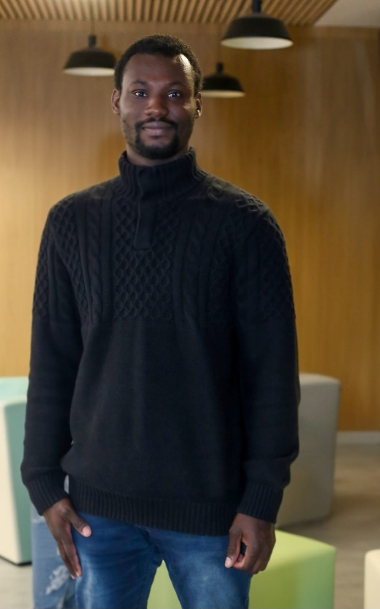
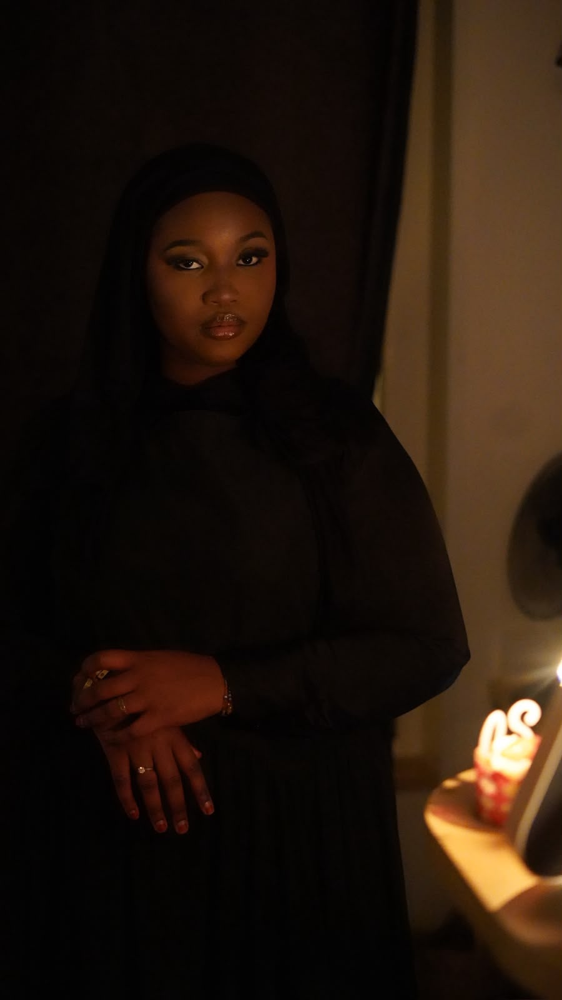
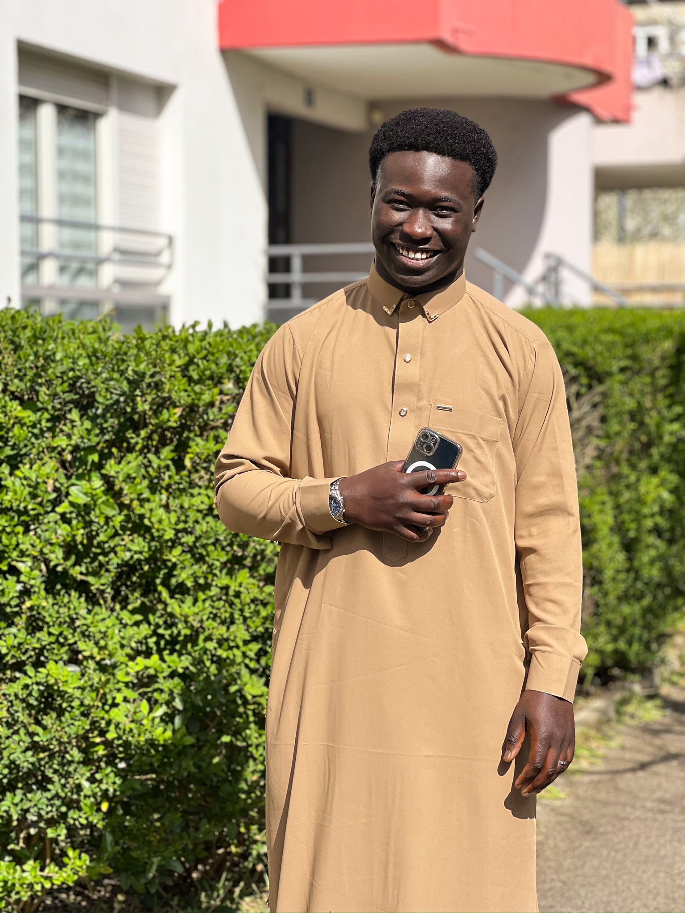

VIE ASSOCIATIVE / ÉLECTIONS 2026
Qui pour la succession
de Oumar Ka Thiam
à la présidence de l’AESM ?
Trois candidatures. Des ambitions pour Metz.
Et un nouveau chapitre à écrire ensemble.
Qui portera la voix des étudiants sénégalais de Metz demain ? En novembre, l’AESM doit choisir sa prochaine présidence. À l’approche de ce rendez-vous, trois candidatures dessinent déjà les contours du débat.
Accueillir les nouveaux arrivants, soutenir les parcours étudiants, faire vivre la solidarité et donner de l’élan aux projets communs : derrière le choix d’un nom, c’est une manière de faire avancer l’association qui se joue. La date exacte de l’élection reste à communiquer, mais les priorités de campagne commencent à se préciser.
Trois candidatures,
un même horizon collectif.
Ahmet Tambedou, Mouhamadou Dame Diop et Khoudia Sow Tall Dioum présentent chacun leur vision. Voici les grandes lignes de leurs engagements, résumées à partir de leurs affiches.

01PARTENARIATS & SOLIDARITÉ
Ahmet
Tambedou
Développer des partenariats utiles, renforcer les aides aux étudiants et faire grandir le vivre-ensemble pour une AESM plus ambitieuse.
« Ensemble pour une AESM plus forte »

02ÉCOUTE & ACTION COLLECTIVE
Khoudia
Sow Tall Dioum
Placer l’écoute et la solidarité au cœur de l’association, porter des projets concrets, valoriser les talents et renforcer le rayonnement de l’AESM.
« Une voix pour chacun, une association pour tous. »

03INTÉGRATION & OPPORTUNITÉS
Mouhamadou
Dame Diop
Faciliter l’accueil et le soutien académique, ouvrir l’accès aux jobs étudiants et rassembler autour du sport et de la culture, dans l’écoute et la transparence.
« Votre confiance, ma priorité ! »
Une campagne à suivre ensemble
Ces trois projets donnent une première lecture des choix qui s’offriront aux membres. Les prochaines semaines permettront de suivre la campagne et de découvrir davantage les propositions de chacun. La date précise de l’élection sera communiquée lorsqu’elle sera connue.
Au-delà des préférences, ce rendez-vous est l’occasion de parler du quotidien des étudiants et de ce que l’association peut construire avec eux. L’avenir de l’AESM se prépare aussi dans ces échanges.
Et le président sortant, Oumar Ka Thiam, va-t-il continuer à mettre son expérience au profit de l’association ?
L’avenir nous le dira.
PARTICIPEZ AU SONDAGE
Quelle candidature
vous inspire le plus ?
Parmi ces trois candidatures, laquelle a votre préférence ?
Chargement du sondage…